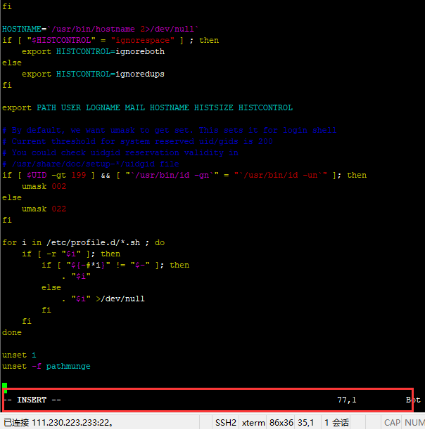
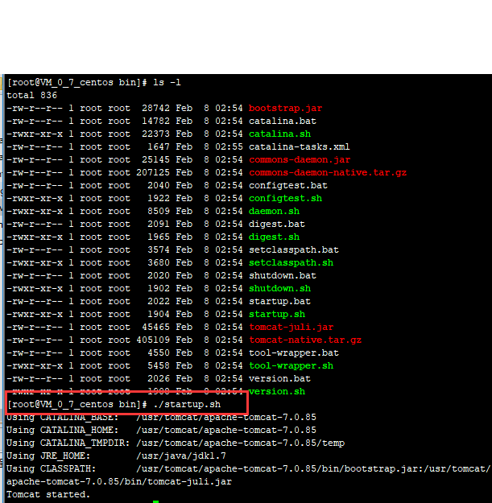

tomcat linux deploy
this page shows the process to deploy a tomcat in linux, and deploy a webapp to tomcat.
写在前面：之前看到java高级工程师的招聘，发现都要求熟悉tomcat、mysql、weblogic的部署和调优，于是兴冲冲的准备大搞一番，部署完了才发现tmd这么简单（当然不能跟有几年linux部署经验的运维人员比），没错，就是这么简单，毫无技术深度！估计是现在的HR没有东西写了，才写了这样的要求上去。在我看来，《计算机科学与技术》这门专业有科学两个字，必定离不开数学，对数学和计算机基础理论的掌握程度才是衡量一个计算机人才的标准。
配置
- CentOS Linux release 7.4.1708 (Core)
- jdk-7u80-linux-x64
- apache-tomcat-7.0.85
可能用到的linux命令：
uname -a //显示系统版本信息
top //显示系统进程
kill pid //杀死进程
ls -a //显示所有文件
ls -r //显示文件（带参数）
ls -l //显示文件（带详细参数）
mkdir filename //新建文件夹
cp -a /root/aaa /root/bbb //复制文件夹
mv /root/aaa/1.txt /root/bbb/1.txt //移动文件
mv /root/aaa /root/bbb/ //移动文件夹
rm /root/aaa/1.txt //删除文件
rm -rf /root/aaa //删除文件夹
1.在usr目录下建立java目录
mkdir java
cd /usr/java
2.上传jdk到java目录并解压
tar zxvf jdk-7u80-linux-x64.gz
3.配置环境变量
vim /etc/profile
3-1.打开profile配置文件后按i进入insert状态

3-2.然后添加如下内容：JAVA_HOME根据实际目录来
JAVA_HOME=/usr/java/jdk1.7
CLASSPATH=$JAVA_HOME/lib/
PATH=$PATH:$JAVA_HOME/bin
export PATH JAVA_HOME CLASSPATH
3-3.编辑好之后，按esc键退出insert状态，输入":"，再输入"wq"，然后按回车键（如果不保存退出，则输入":"，再输入"q!"，然后按回车键）
4.激活配置
source /etc/profile
5.查看安装情况
java -version
//会有以下信息
java version "1.8.0_60"
Java(TM) SE Runtime Environment (build 1.8.0_60-b27)
Java HotSpot(TM) Client VM (build 25.60-b23, mixed mode)
6.在usr目录下建立tomcat目录
mkdir tomcat
cd /usr/tomcat
7.上传tomcat到服务器并解压
tar zxvf apache-tomcat-7.0.85.tar.gz
8.进入tomcat服务器的bin目录，然后执行"./startup.sh"命令启动Tomcat服务器，如下图所示：

9.进入tomcat服务器下的logs目录，打开catalina.out文件进行查看启动信息
cat catalina.out